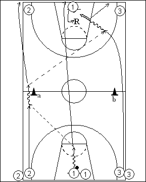

Catégorie : FASTBREAK (Fb-010)
Déroulement
- Trois files de joueurs à chaque baseline. Les meneurs se placent au milieu de chaque baseline, les ailiers et pivots prenant place dans les autres files. Le premier joueur d’une file 1 possède un ballon.
- La première vague de trois (du côté où se trouve le ballon) démarre. La première passe se fait toujours du côté gauche. Le premier joueur de la file 1 fait un dribble et une passe au premier joueur de la file 2 qui réalise également un dribble (derrière le cône a) avant de passer au premier joueur de la file 3 (qui est passé derrière le cône b) pour un lay-up.
- Après son lay-up, le premier joueur de la file 3 va dans la file 3 opposée; 2 va dans la nouvelle file 2; 1 va dans la nouvelle file de meneurs. Le premier joueur de la file 1 opposée effectue le rebond et la nouvelle vague de trois démarre avec toujours première passe à gauche.
Coaching points
- Après un certain temps, on réalise la première passe du côté droit pour que les lay-ups soient exécutés à gauche.
- Il n’y a que deux dribbles à chaque traversée, celui du meneur et celui du joueur qui reçoit la première passe.